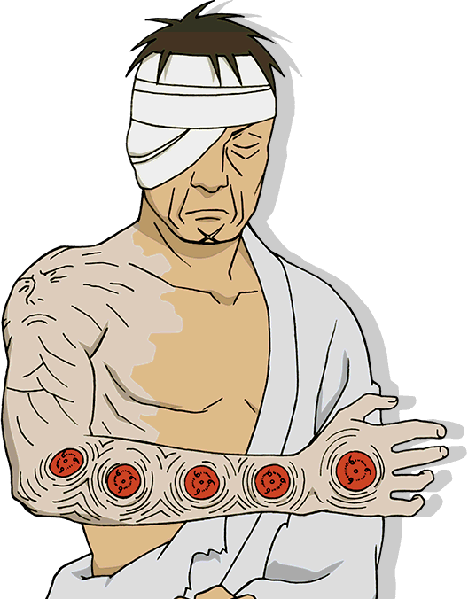
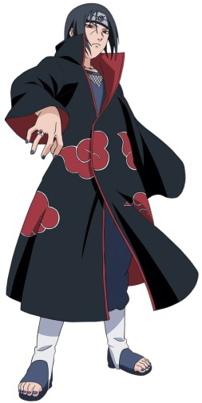
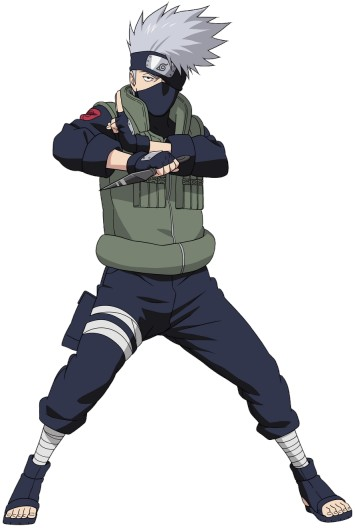
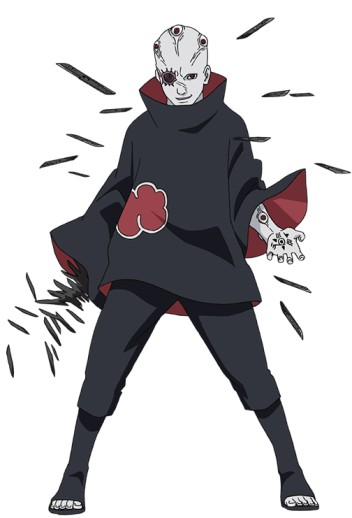
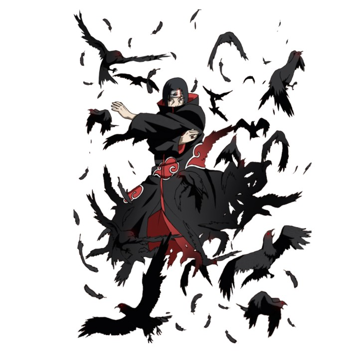

Genjutsu (Illusion Techniques)
|
Genjutsu techniques are the illusion techniques of a ninja,
they normally require hand seals. Genjutsu will use hypnotism to cause hallucinations in others.
By causing such illusions they can cause their target mental pain and suffering just as real as physical hurt.
Genjutsu is created when a ninja extends their chakra flow through the cerebral nervous system of their opponent to control their minds chakra,
thereby affecting their five senses.
To combat the effects of Genjutsu, there are two options.
The first option is for the ninja to stop the flow of chakra in their body,
and then apply an even stronger power to disrupt the flow of the casters chakra.
The second option is to have an outside ninja unaffected by the Genjutsu make body contact,
and use their chakra to disrupt the casters flow.
|

|
Izanagi - Forefather God
Character Use: Rikudou Sennin, Shimura Danzou, Uchiha Madara
|
Izanagi, named for a god who helped spawn many islands and deities, is a Genjutsu technique which was declared a Kinjutsu by the Uchiha Clan.
Using Izanagi grants the user the ability to turn wounds and disadvantages into nothing more than dream.
It also makes attacks and advantageous maneuvers real, thus giving one complete control over their own reality through an illusion cast on themselves.
The creative power of Izanagi was first used the Rikudou Sennin. Izanagi uses the mind and spiritual power of Yin to shape reality,
and the vitality and physical power of Yang to give it life. The Rikudou used that same power to create the Bijuu from the Juubi.
The Rikudou's powers were passed on to the Uchiha and Senju, and only one containing both of their power can use the jutsu.
When jutsu is cast on one's own self, any damage received while it is active is negated.
Their crippled form will shudder away like an illusion into nothingness while they appear unharmed away from the danger.
For those who do not possess the Rinnegan, using the jutsu has a drawback, as using the jutsu will cause their vision to be lost forever.
This result caused the Uchiha to declare it forbidden.
The jutsu normally has a short time limit which varies from Uchiha clan member to clan member.
This was extended through the experimentation of Orochimaru, which granted almost a minute of immortality for each eye sacrificed.
This was used to full effect when ANBU Root leader Danzou had a portion of Senju Hashirama and numerous viable Sharingans implanted in his right arm.
This extended time was active at the cost of an ongoing drain on Danzou's chakra.
So when active, it allowed him to absorb numerous fatal attacks at the cost of one of the Sharingan eyes permanently closing on his arm and becoming useless.
Should Danzou need to conserve chakra and protect the eyes, he would cancel the jutsu and attempt to avoid critical hits.
|
 |
Kakkou's Genjutsu Interrogation Technique (Unnamed)
Character Use: Kakkou
Hidden Rock ninja Kakkou used this Genjutsu interrogation technique on Leaf kunoichi Rin.
Because it was a war-time situation, Kakkou hoped he could extract troop movements and battle plans from the young ninja.
To try and break her will, he put her under a Genjutsu sensory spell.
Because of Rin's strong will she was able to resist the pressure and not reveal any information.
Kamira's Genjutsu (Unnamed)
Character Use: Kamira
This unnamed Genjutsu is a technique used by Kamira.
Kamira will cause the area around the target to be enveloped by darkness.
Once inside the black space, the target will see grotesque figures said to be tortured criminals, the previous victims of the technique.
These grotesqueries will reach out and grab a hold of the target.
They will then be thrown into the void to the mercy of a spectral dragon.
The horrifying oni can even extend from the targets own body to attack them.
All aimed at transfixing the victim with fear and shock while Kamira herself chokes and kills the target.
Kasumi Juusha no Jutsu - Mist Servant Technique
Character Use: Kagari, Mubi, Oboro
Kasumi Juusha no Jutsu is a Genjutsu technique that creates false attackers to delay and confuse the enemy.
Though these servants are not real, the actual ninja is able to remain hidden and throw kunai and shuriken matching the movements of the servants.
This makes it appear the false servants are capable of attacking. When the enemy attempts to attack the servant,
they will merely disrupt the servants illusion body but not destroy it.
Kokohi no Jutsu - False Place Technique
Character Use: Hagane Kotetsu
Kokohi no Jutsu is a simple Genjutsu technique which changes the appearance of a nearby object.
Kokuangyou no Jutsu - Journey into Black Darkness Technique
Character Use: First Hokage (Manga), Second Hokage
Kokuangyou no Jutsu is a Genjutsu technique which causes the ninja's opponent to be enveloped in total darkness.
While in the black void, the ninja will be unable to see any incoming attack or threat.
Kori Shinchuu no Jutsu - Sly Mind Affect Technique
Character Use: Kagari, Mubi, Oboro
Kori Shinchuu no Jutsu is a Genjutsu technique which causes the target to travel around in circles.
If the ninja is unable to detect the illusion very quickly,
they can become exhausted mentally and physically when they are unable to
each their desired target by traveling along the same path over and over.
Kotoamatsukami - Distinguished Heavenly Gods
Character Use: Uchiha Shisui, Shimura Danzou, Itachi's Crow
|
Kotoamatsukami, named for first of the Japanese gods,
is a Ninjutsu technique which uses the Mangekyou form of the Sharingan eye to control the minds and opinions of others, without the victim's awareness.
It is regarded as Uchiha Shisui's ultimate Genjutsu of his Mangekyou eyes. This power helped Shisui be regarded as the most powerful Genjutsu user of the Uchiha.
His skills were so legendary, that he decided to end his own life for fear his eyes fall into the wrong hands.
In their normal Mangekyou state, each eye can cast one mind control jutsu approximately every decade.
No direct eye contact with the victim was needed, as Kotoamatsukami could be cast while still being covered and hidden with cloth.
However the victim still needed to be within the vicinity.
Godaime Mizukage regarded Kotoamatsukami as being similar to the jutsu used to
control her predecessor Yagura by the man known as Tobi.
Shisui's right eye was taken and implanted by ANBU Root leader Danzou.
With the addition of genetic material from Senju Hashirama, Danzou was able to utilize Kotoamatsukami on a much more frequest basis,
though not more than once in single day. To that end he used the ability to help him become the
preliminary Rokudaime Hokage and almost become supreme leader of the shinobi alliance.
Shisui enrusted his left eye with his friend Uchiha Itachi, who implanted the eye in a crow.
This crow he later implanted into Naruto, with the added command that upon seeing Itachi's Mangekyou eye again,
it would cast the command "Protect Konoha" back at the Mangekyou holder.
Kotoamatsukami was so powerful, that it was able to overlay a new command on Itachi,
who had been resurrected via Edo Tensei.
|
 |
Magen • Kasegui no Jutsu - Demonic Illusion • Shackling Stakes
Character Use: Uchiha Itachi, Uchiha Sasuke
|
Magen • Kasegui no Jutsu is a Genjutsu technique unique to the Uchiha bloodline Sharingan holders.
After activating their Sharingan, the clan member will look into the eyes of their target to bind them with a paralyzing illusion.
This illusion takes the form of giant spikes which stake them in place and restrict their movement.
A powerful enough ninja will be able to fight the bind to give themselves an opportunity to gain freedom.
|
 |
Magen • Kyouten Chiten - Demonic Illusion • Mirror Heaven and Earth Change
Character Use: Uchiha Itachi
|
Magen • Kyouten Chiten is a Genjutsu technique unique to the Uchiha bloodline Sharingan holders.
Using the copy and counter functions of the Sharingan eye,
the Uchiha clan member can stop the sensory spell cast on their body and reverse it back on their opponent.
|
 |
Magen • Narakumi no Jutsu - Demonic Illusion • Hell Viewing Technique
Character Use: Hatake Kakashi
|
Magen • Narakumi no Jutsu is a Genjutsu technique that causes its target to see a horrifying vision.
The ninja will use the serpent hand seal to cause a circle of leaves to spin and envelop the target and then fall away.
Once cast the world will appear normal to the target until they see the illusion.
|
 |
Nehan Shouja no Jutsu - Temple of Nirvana Technique
Character Use: Kabuto
|
Nehan Shouja no Jutsu is a Genjutsu technique that allows the caster to place a large body of people into a unconscious state.
The target can avoid the spell by forming and using the dispel skill.
|
|
Shiin's Kanashibari Music (Unnamed)
Character Use: Shiin
|
This unnamed Genjutsu technique is used by Rice Field Country ninja Shiin.
Using his clan's well known musical abilities,
Shiin will play a tune on his flute which will bind in place anyone he targets.
|
 |
Tsukuyomi - God of the Moon
Character Use: Uchiha Itachi, Uchiha Sasuke
|
Tsukuyomi, named for the God of the Moon, is a Genjutsu technique which uses the Mangekyou
form of the Sharingan eye to generate a powerful illusion. This jutsu is generated by the left Mangekyou eye.
This highly advanced technique can not be used extensively because of the toll it places on the user.
To utilize the illusion, the clan member will look into the eyes of his opponent and cast a Genjutsu spell on them.
The illusion takes place in the mind of the one affected, while under the jutsu the victim is at the total mercy of the user.
The user has full control over space and time in the jutsu and can place the one affected through any hell they desire for any length desired.
The technique itself only lasts for but a second in reality, but the one affected could have lasted through several days of torture.
|
|
|
Utakata - Ephemeral
Character Use: Uchiha Itachi
|
Utakata is a Genjutsu technique utilized by Akatsuki member Uchiha Itachi.
Itachi will start this technique by using only one finger on his right hand.
His target does not have to look into his eyes, a glance at the hand itself will be enough.
Once inside the illusion, he can control the visions the ninja sees.
This illusion can also be used to play on the fears of the target,
causing them to see and hear those who they care about degrade them.
|
 |